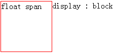

KB009: CSS 定位体系概述
三种定位体系简介
框( box )布局影响因素之一，便是定位体系。定位体系也是其最为重要的影响因素。
CSS2.1 中，一个框可以根据三种定位体系布局。CSS2.1 中的定位体系帮助作者使他们的文档更容易理解，并不需要使用标记的手段（如，不可见的图片）达到布局的效果。
常规流( Normal flow )
常规流，是对 "normal flow" 的直译。
之称之为常规流，是因为这是相对于后面的浮动和绝对定位的一个概念，浮动和绝对定位元素都脱离了当前的常规流。
在 CSS2.1中，常规流包括块框( block boxes )的块格式化( block formatting )， 行内框( inline boxes )的行内格式化( inline formatting )，块框或行内框的相对定位，以及插入框的定位。
浮动( Floats )
浮动，顾名思义，相对于常规流来讲，它漂浮在常规流的上方。
在浮动模型中，一个框( box )首先根据常规流布局，再将它从流中取出并尽可能地向左或向右偏移。内容可以沿浮动区的侧面排列。 因为它首先要根据常规布局后才偏移，所以效率较常规流低。
用 'float' 特性声明浮动，特性值可以是："none"、"left"、"right"。
绝对定位( Absolute positioning )
在绝对定位模型中，一个框整个地从常规流中脱离（它对后续的兄弟元素没有影响），并根据它的包含块1来分配其位置。
注：
- 关于包含块的概念，请参见： W3Help - KB008: 包含块( Containing block )
选择定位方案：'position' 特性
'float' 和 'position' 特性决定了使用哪种 CSS2.1 定位算法来计算框的位置。
'position' 特性介绍表：
| 值 | static | relative | absolute | fixed | inherit |
| 初始值 | static |
| 适用于 | 所有元素 |
| 可否继承 | 否 |
| 百分比值 | N/A |
| 计算值 | 同设定值 |
特性值的含义
static
该框是一个常规框，布局根据常规流。'left' 、'right'、'bottom' 和 'top' 属性不适用。
relative
框的位置根据常规流计算（被称为常规流中的位置）。然后框相对于它的常规位置而偏移。如果框 B 是相对定位的，其后框的定位计算并不考虑 B 的偏移。 table-row-group, table-header-group, table-footer-group, table-row, table-column-group, table-column, table-cell, 和 table-caption 元素的 'position:relative' 效果没有被定义。
示例代码：
<div style="position:static; width:100px;"> <div id="A" style="background-color:green;">A</div> <div id="B" style=" position:relative; top:70px; left:50px; background-color:red;">B</div> <div id="C" style="background-color:blue;">C</div> </div>
根据标准，B 的位置应该相比自身原位置偏移，而 C 在放置的时候，会认为 B 仍然在原位置。
示意图： 
注意，相对定位的元素处于常规流中，没有脱离常规流。
absolute
框的位置（可能还有它的尺寸）是由'left'，'right'，'top'和'bottom'特性决定。这些特性指定了框相对于它包含块1的偏移量。 绝对定位的框从常规流向中脱离。这意味着它们对其后的兄弟元素的定位没有影响。另外，尽管绝对定位框有外边距(margin)， 它们不会和其它任何外边距发生折叠（Collapsing margins）2。
示例代码：
<div style="position:absolute; width:300px; border:2px solid yellow;"> <div id="A" style="background-color:green; height:50px;">A</div> <div id="B" style="position:absolute; top:70px; left:50px; height:50px; background-color:red;">B</div> <div id="C" style="background-color:blue; height:50px;">C</div> </div>
示意图：

fixed
框位置的计算根据 'absolute' 模型，不过框要额外地根据一些参考而得到固定。跟绝对定位一样，固定定位元素的外边距不会和任何其他外边距发生折叠。 应用于手持终端、投影设备、屏幕、TTY、电视媒体类型时，框相对于可视窗口3固定，滚动时不移动。应用于打印媒介类型时，框被渲染于每一页， 并相对于页框固定，就好象是通过可视窗口查看该页一样（例如，打印预览）。对于其他的媒介类型，表现没有被定义。
对根元素的 'position'，用户端(UA)可以视为 "static"。
注：
- 关于包含块的概念，请参见： W3Help - KB008: 包含块( Containing block )
- 关于外边距折叠，请参见 W3Help - KB006: CSS 框模型( Box module ) 的外边距折叠部分。
- 既 viewport，请见 W3Help - KB007: 可视化格式模型( visual formatting model )简介 的视口( viewport )部分。
框偏移: 'top'，'right'，'bottom'，'left'
如果一个元素的 'position' 特性值不是 "static"，该元素被称为定位元素。定位的元素生成定位框，其定位基于四个特性：'top'，'right'，'bottom'，'left'。
| 值 | 这四个特性的值1可以是： <length> | <percentage> | auto | inherit 之一
|
| 初始值 | auto |
| 适用于 | 定位的元素，即 'position' 特性的值为非 "static" 的元素。 |
| 可否继承 | 否 |
| 百分比值 | 百分比值基于包含块的高度(top, bottom)或者宽度(left, right) |
| 计算值 | 对于 "position:relative" 参见相对定位；对于 "position:static" 取值 "auto"； 其他情况，如果值为长度，取相应的绝对长度，如果标值为百分比，取指定的值，否则，取 "auto"。 |
| 定位作用的具体位置 |  对于绝对定位元素( absolutely positioned )的框，这四个特性的值表示，元素的外边界( margin 边界)相对于 包含块 的边界的位移。 对于绝对定位元素( absolutely positioned )的框，这四个特性的值表示，元素的外边界( margin 边界)相对于 包含块 的边界的位移。而对于相对定位元素( relatively positioned )的框，偏移量相对于它自己的相应的边界。比如，top 是相对于它的顶边界，right 相对于右边界。 |
注：
- 关于特性的值，请参见： W3Help - KB002: CSS 特性和值
'display'、'position' 和 'float' 的相互关系
总流程图：

转换对应表：
| 设定值 | 计算值 |
|---|---|
| inline-table | table |
| inline, run-in, table-row-group, table-column, table-column-group, table-header-group, table-footer-group, table-row, table-cell, table-caption, inline-block |
block |
| 其他 | 同设定值 |
这一节是为了调和三种布局和框形成的关键特性( display )之间的关系而设。总的来说，可以把它看作是一个类似优先级的机制， "position:absolute" 和 "position:fixed" 优先级最高，有它存在的时候，浮动不起作用，'display' 的值也需要调整； 其次，元素的 'float' 特性的值不是 "none" 的时候或者它是根元素的时候，调整 'display' 的值； 最后，非根元素，并且非浮动元素，并且非绝对定位的元素，'display' 特性值同设置值。
这从另一个侧面说明了一个问题：浮动或绝对定位的元素，只能是块元素或表格。
1. 'display' 的值为 'none'
如果 'display' 的值为 'none'，那么 'position' 和 'float' 不起作用。在这种情况下，元素不产生框。因此浮动和定位无效。
2. 'position' 的值是 'absolute' 或 'fixed'
否则，如果 'position' 的值是 'absolute' 或 'fixed'，框就是绝对定位的，'float' 计算后的值应该是 'none'，并且，'display' 会被按照下表设置。 框的位置将由 'top'，'right'，'bottom' 和 'left' 属性和该框的包含块确定。
也就是说，当元素是绝对定位时，浮动失效，'display' 会被按规则重置。
示例代码：
<script type="text/javascript">
function getStyle(obj, style) {
var _style = (style == "float") ? "styleFloat" : style;
return document.defaultView ? document.defaultView.getComputedStyle(obj, null).getPropertyValue(style) : obj.currentStyle[_style.replace(/-[a-z]/g, function() {
return arguments[0].charAt(1).toUpperCase();
})];
}
window.onload = function() {
document.getElementById("info").innerHTML = "float : " + getStyle(document.getElementById("test"), "float") +
"<br/>display : " + getStyle(document.getElementById("test"), "display");
}
</script>
<div id="test" style="position:absolute; float:left; display:inline;"></div>
<div id="info"></div>
上面代码中有一个既是绝对定位又是浮动的元素，以上代码可取出其 'display' 和 'float' 的计算值1。
IE 中，'float' 值和 'display' 的特性值未发生变化，还是 "float: left; display: inline"。
其他浏览器中计算后的结果是："float: none; display: block"。
3. 'float' 的值不是 "none"
如果 'float' 的值不是 "none"，该框浮动并且 'display' 会被按照转换对应表设置。
<!DOCTYPE html>
<script type="text/javascript">
function getStyle(obj, style) {
var _style = (style == "float") ? "styleFloat" : style;
return document.defaultView ? document.defaultView.getComputedStyle(obj, null).getPropertyValue(style) : obj.currentStyle[_style.replace(/-[a-z]/g, function() {
return arguments[0].charAt(1).toUpperCase();
})];
}
window.onload = function() {
document.getElementById("info").innerHTML = "display : " + getStyle(document.getElementById("test"), "display");
}
</script>
<span id="test" style="width:100px; height:100px; border:1px solid red; float:left;">float span</span>
<div id="info"></div>
按照规则，SPAN 是行内元素，因此不能够设置其宽度和高度。但是浮动后，'display' 值按照转换对应表设置后，成为块级元素。
IE 中截图：

其他浏览器中：

4. 元素是根元素
如果元素是根元素，'display' 的值按照转换对应表设置。
5. 否则，应用指定的 'display' 特性值。
注：
- 关于计算值的解释，请参考：W3Help - KB004: 设置 CSS 的特性值
测试环境
| 操作系统版本: | Windows 7 Ultimate build 7600 |
|---|---|
| 浏览器版本: | IE6 IE7 IE8 Firefox 3.6.10 Chrome 7.0.517.0 dev Safari 5.0.2 Opera 10.62 |
| 测试页面: | |
| 本文更新时间: | 2010-09-21 |
关键字
position 定位 浮动 常规流 display